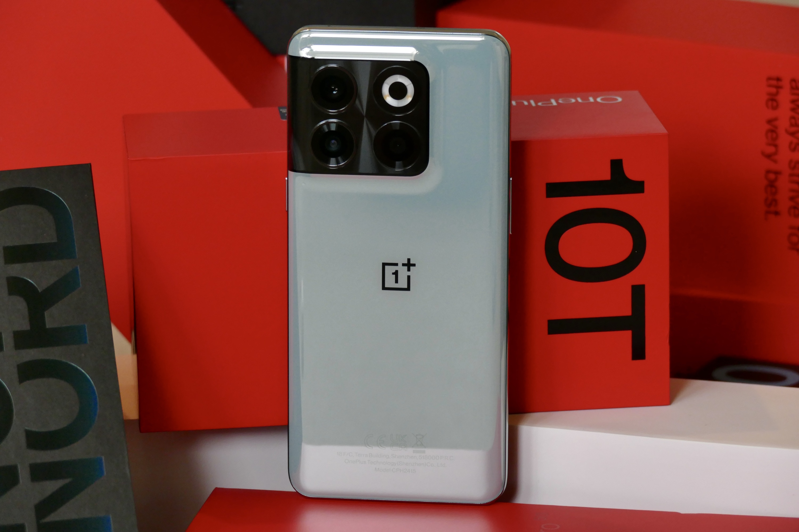

Oneplus 10t

- Description
-
OnePlus 10T 5G mobile was launched on 3rd August 2022. The phone comes with a 120 Hz refresh rate 6.70-inch
touchscreen display offering a resolution of 1080x2412 pixels (FHD+). OnePlus 10T 5G is powered by an
octa-core Qualcomm Snapdragon 8+ Gen 1 processor. It comes with 8GB, 12GB, 16GB of RAM.